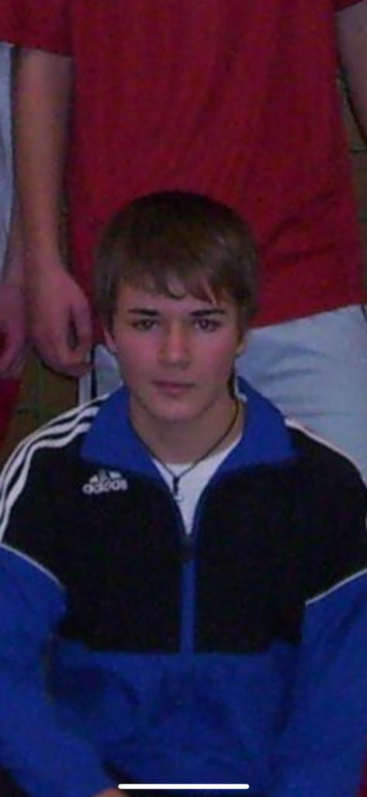

Frey in Bildern



Der Countdown läuft – Hochzeit am 05.07.2025
Marcel Frey – Lehrer, Lebensphilosoph, VfB-Romantiker und Nutella-Liebhaber.
Er unterrichtet mit Kreide, Charme und konsequent 3 Minuten zu früh.
Seine Schüler fürchten seine Ironie, seine Freunde lieben seine Listen.
Ob auf dem Wandertag, beim Frühschoppen oder am Whiteboard: Marcel regelt.
Ab Juli verheiratet – aber bis dahin wird's nochmal peinlich.